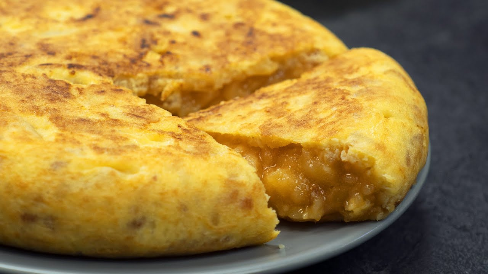

Receta Tortilla de patata.

Introduccion:
La descripción de la mejor tortilla de España según los entendidos del concurso
nacional de tortilla de patatas se resume en dos frases:
«Tortilla con los mejores productos de su tierra», y «Conseguir que el huevo
conserve sus propiedades de sabor, color y aroma gracias a una cuidada elaboración
en la que el huevo batido en sus justa medida y la patata caliente, gracias a una
precocción, permiten que el huevo jugoso termine inundando el plato».
Ingredientes:
- 8 huevos camperos o 10 huevos normales.
- 1 kg de patatas gallegas o especiales para fritura
- Aceite de oliva virgen extra para la fritura de las patatas
- 1 cebolla grande (opcional)
- Sal (al gusto)
Receta paso a paso:
- Preparación de la tortilla de patatas
- Pelamos las patatas, las lavamos para quitar restos de suciedad y muy importante,
las secamos. Cortamos en láminas semifinas, a mí no me gusta que se deshagan sino
que al freírlas se tuesten un poco. Las colocamos en un bol grande, donde luego
vamos a mezclar con el huevo y añadimos sal al gusto. Removemos bien y reservamos.
- Elegimos nuestra sartén más grande y antiadherente. La ponemos al fuego y añadimos
un buen aceite de oliva virgen extra. No tengáis miedo en gastaros un poco de dinero
en aceite, le va a dar ese punto de sabor que distingue vuestra tortilla de las demás,
podéis emplear muchas variedades: arbequina, picual, cornicabra, hojiblanca, royal…
el que más os guste, pero de calidad.
- Introducimos las patatas cortadas y ya saladas y dejamos que se cocinen durante
aproximadamente de veinte a treinta minutos a fuego bajo. El tema del grosor de
las patatas también va a gustos. Hay quien prefiere cortarlas a trozos muy pequeños,
en láminas muy finas que casi se rompan al freír y o más bien grandes.
- Mientras se están friendo las patatas, en el bol donde luego vamos a echar las patatas
batimos los huevos, reservamos. Pelamos la cebolla y cortamos lo más fino posible.
-
En otra sartén calentamos aceite de oliva y añadimos los trozos de cebolla. Pochamos
hasta que tenga un color dorado, que tenga un punto de caramelización pero sin llegar
a quemarse. La cebolla se hará antes que las patatas, así que escurrimos y añadimos al
bol con el huevo batido.
- Preparación final de la tortilla de patatas con cebolla
- Os dejo con un truco que le dará a la tortilla un toque diferente y muy rico, es
totalmente opcional. Si tenéis en la nevera cebolla caramelizada o la queréis hacer,
sustituid la cebolla pochada por la caramelizada. Quedará impresionante.
- Quitamos con una espumadera de la sartén, dejando las patatas con el menor resto de aceite
posible, bien escurridas. Si no queremos nada de aceite extra podemos emplear un colador grande.
Las dejamos escurrir y luego las introducimos al bol con la cebolla y el huevo.
- Reposamos la futura tortilla durante 15 minutos para que se junten bien todos los sabores.
Pasados esos minutos esta mezcla ya está deliciosa, probad a tostar un poco de pan y
añadidle una capita con esta mezcla, increíble.
- En la misma sartén en la que hemos frito las patatas y una vez retirado el aceite. Cocinamos
la mezcla que tenemos en reposo. A mí me gusta poco hecha, que al partirla con el tenedor
salga un poco de huevo líquido. Para este tipo de tortilla sólo necesitamos 4 minutos a fuego
medio-alto por cada lado. Depende de lo cuajada que queramos que quede la tortilla.
- Para darle la vuelta yo empleo un plato llano grande que tengo para las ensaladas. Pero se puede
usar una tapadera de borde liso, incluso ahora he visto que venden tapaderas especiales para dar
la vuelta a la tortilla.
- Emplead el método más cómodo y que más fácil os sea para que no se os desparrame, con cuidado.
No desesperéis si no os sale, en ese caso tendréis una tortilla más cuajada, pero igual de rica.
Consejos para una buena tortilla:
1. Mi tortilla desde siempre ha sido, y será, con cebolla, os advierto porque sé que no a
todo el mundo le gusta. Si no la queréis sólo tenéis que seguir la receta sin ella. A todos aquellos que me
habéis pedido la receta por mail, y la mayoría sois de fuera de España, os recomiendo el toque dulce que le
da la cebolla. La primera prueba que sea con ella, la siguiente a vuestra elección.
2. La elección de las patatas es súper importante. Tenemos distintos tipos de patata, unas
son muy buenas para cocer. Otras para asar y las patatas blancas tipo Kennebec son las mejores para freír y
conseguir la mejor textura en la tortilla. Si queréis mejorar vuestra tortilla esta es una forma fácil y que
os quede mucho más rica, elegid una patata de calidad.
3. El aceite de la elaboración de la tortilla lo podremos emplear para otras recetas ya que
las patatas no dejan casi sabor en el aceite de oliva virgen extra.
4. Y si no tenéis mucho tiempo, siempre podéis optar por la tortilla de patatas al microondas,
parece un sacrilegio, pero en realidad está también muy buena. No lo diría si no la hubiese probado y hecho en
casa ya varias veces. Otra opción para disfrutar de la tortilla española.
5. El tema del interior de la tortilla es el que más controversia genera en España, ese punto
exacto de cochura de la patata, la cantidad precisa de huevo, la combinación de fuegos y el tiempo de cocción.
Sólo os dejo la mía para que la probéis, vosotros hacedla según sea vuestra costumbre, más o menos cuajada, al
gusto de cada uno. A vuestra elección queda pero de rechupete… ¡seguro!